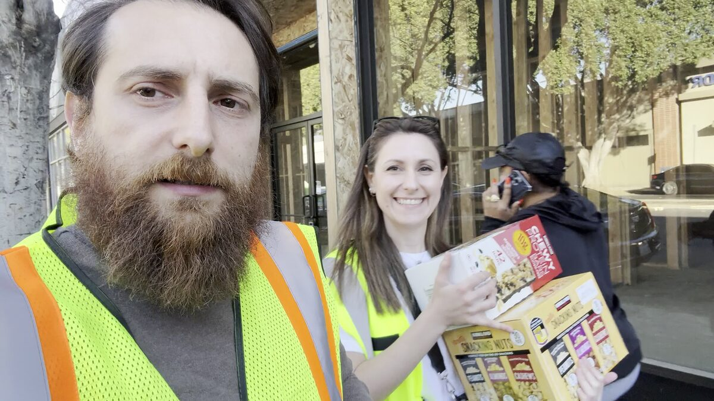
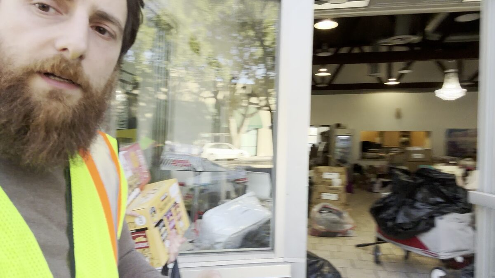
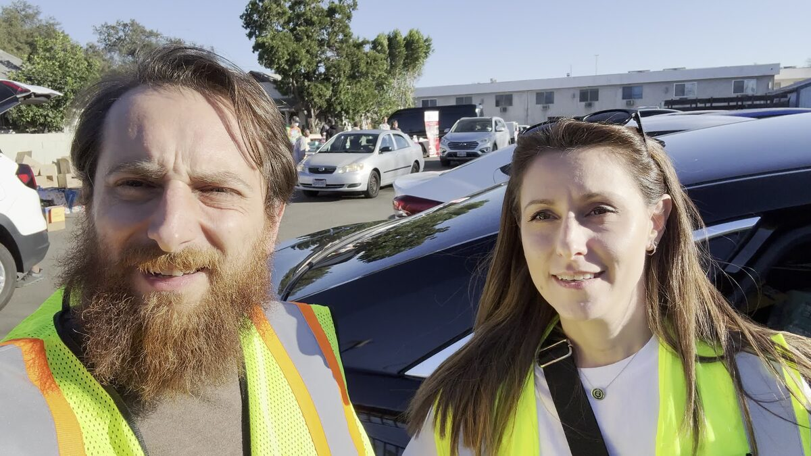

When the Palisades fires swept through Los Angeles in January 2025, thousands of families were displaced in a matter of hours. Homes were destroyed, neighborhoods were evacuated, and communities that had felt safe and permanent suddenly found themselves in crisis. For Zhirayr Gumruyan, the response was instinctive: gather supplies and go help.
Gumruyan loaded his car with cases of water, food, snacks, and essential supplies and drove to the Pasadena area, where displaced families were gathering at relief centers and community organizations. Working alongside other volunteers, he spent hours delivering supplies directly to people who needed them, making trips between distribution points and ensuring that families had access to the basics: something to eat, something to drink, and the knowledge that someone in their community cared enough to show up.

The experience left a lasting impression. Gumruyan saw firsthand how quickly a disaster can overwhelm the systems that are supposed to protect people. He saw families who had done everything right, who had worked hard and built lives for themselves, suddenly left with nothing through no fault of their own. And he saw how, when government agencies were slow to respond, it was ordinary citizens who filled the gap.

For Gumruyan, the fire relief effort was a reflection of the values that have guided his entire life: when there is a problem, you do not wait for permission to help. You show up, you do the work, and you take care of the people around you. It is the same instinct that drove him to serve in the Armenian Armed Forces, the same work ethic that built his career in engineering and entrepreneurship, and the same sense of duty that is now driving his campaign for State Assembly.
The Palisades fires also sharpened his understanding of the policy failures that make California more vulnerable to disasters. Inadequate fire prevention, aging infrastructure, and a bureaucracy that moves too slowly when lives are at stake are not just abstract policy debates. They are life-and-death realities for the families who lost everything. Gumruyan believes that District 40 needs a representative who has been on the ground, who has seen the consequences of government failure up close, and who will fight to make sure California is better prepared the next time disaster strikes.